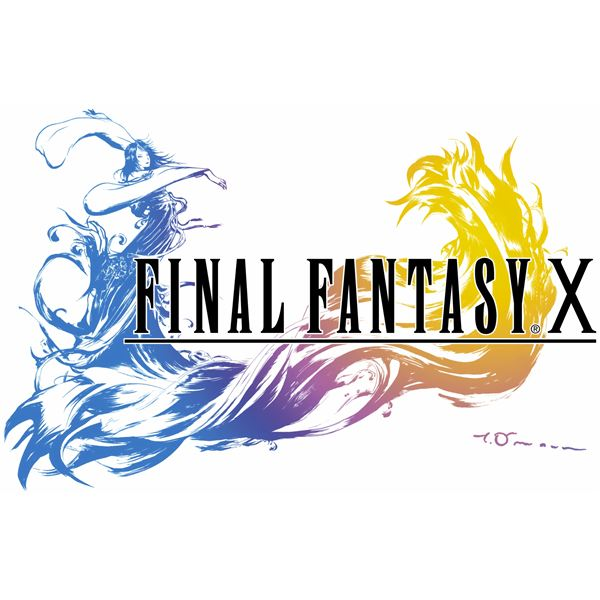

Länk till officiella hemsidan: Final Fantasy 10
Soundtrack


Trailer till spelet
Länk till officiella hemsidan: Final Fantasy 10
Soundtrack
Fakta:
Final Fantasy X är den tionde delen i rollsspelserien Final Fantasy. Det är det första spelet som släpptes till Playstation 2 och det är även det första spelet i serien som fick en direkt uppföljare med Final Fantasy X-2. Spelet släpptes 2002 i Europa och har sålt över 7 miljoner exemplar världen över (år 2004).
Stridssystem:
Det nya i Final Fantasy X är stridsystemet, där Final Fantasy X använder sig av Conditional Turn-Based System (CBT) istället för det traditionella Active Time Battle. Skillnaden mellan dessa två är att CBT tar en paus vid varje figurs tur att agera, vilket ger spelaren mer tid att tänka ut attacker och så vidare. Varje figur har även en specialattack som heter "Overdrive", i Final Fantasy VII kallas den för "Limit Break". Final Fantasy X tillåter spelaren att kontrollera upp till tre figurer vid varje strid, och spelaren har även möjlighet att byta in andra figurer udner stridens gång. Vem som helst av de olika figurerna kan bytas in förutom om en karaktär är död då går det inte att göra.
Nivåsystem:
Nivåsystemet kallas för "Sphere Grid" och det innebär att för att lära sig nya attacker och magier så måste spelaren samla på sig "Abillity Points" (AP). Dessa poäng blir till sphere levels som spelaren kan använda för att flytta runt figuren i "Sphere Grid". Den spelare som har besegrat en fiende får sådan här "spheres", med vilka figuren kan uppdateras i Sphere Grid.